Libertas
Libertas is the most intriguing of the new political parties contesting the upcoming European elections. Its founder, Anglo-Irish business man, Declan Ganley led the successful NO vote for last year’s Irish referendum of the Lisbon Treaty, but unlike UKIP or No2EU, Libertas wants to reform the EU structure rather than disestablish and not participate in it. Its agenda is pan-European rather than restricted to being based solely in Britain, fielding as much as 500 candidates across the continent. Its policies include replacing the rule of governments appointing the European Commissioners with the election of Commissioners by either national parliamentary votes or by a nationwide election of the respective country. There are also calls on the European Parliament to decide European laws as opposed to the Commission and the Council. Rather than the controversial Lisbon treaty, which Libertas sees as the antithesis to the original European ideal of there being a ‘people’s Europe’, it proposes what it describes as a strong treaty which is discussed in the public arena and subsequently enforced by a mandatory, European-wide vote. While its critics such as the European Labour Party dismiss it as a pressure group masquerading as a political party, Libertas will have to stand the test of June 4th to prove its critics wrong.
CANDIDATES
Edward Francis Devoy
An unemployed, disabled former miner who currently works as a voluntary worker and political activist. He has fought for a ‘fairer and more equitable’ welfare system ‘free from red tape and unnecessary bureaucracy’. He is now taking his fight to the European level to restore to Europe what he sees as the lost dream of Jean Monet – with pledges for greater transparency and for a law making European parliament, as well as full access to MPs voting records.
Stephen Andrew Clark
A Leeds-born business analyst who currently works with the largest financial services provider in the UK and claims to have seen at first sight the turbulence of the credit crunch and what it can mean for Europe. Prior to that, he was a motor technician, who rose through the ranks to dealing with blue chip clients around the world. His political passions lie in forging a Europe, which has at its heart compassion for the elderly and increased protection for the environment. Stephen also wants to set an example to the ‘selfish, greedy and disrespectful MPs of today’.
Diana Macleod
The daughter of the late short-serving Conservative chancellor, Iain Macleod and a former UKIP election candidate is hoping to rekindle the Macleod name as a political force once again. With wide-ranging experience of occupations including running retail businesses and nursery school as well as a local district councillor, local and national charities and arable and livestock farmer, Diana’s special interests include health, education and support for the elderly and disabled. Her aforementioned background as a farmer gives her a special affection for the agricultural side of Britain too.
Trevor John Bending
An alumnus of our University of York, he studied Language and Education and an MA in English Language, teaching here in between 1974-79 and 1986-87 and subsequently qualifying as a teacher. Trevor went on afterwards to publish the first UK internet directory in 1997 and now lives semi-retired in Humberside where he sometimes manages a local sailing club’s website. His main area of political interest lies in the environment and education as well as the lack of transparency, which he believes the EU is espousing.
English Democrats
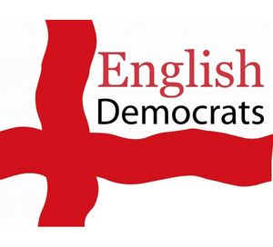
The English Democrats Party (EDP) is founded on the concept of improving the interests of English people everywhere. Their policies for the European Union are as follows:
They disagree with a political entity which undermines the independence and sovereignty of European states. They believe the states of the EU cannot be run along the same economic or social lines due to the difference in circumstances. They fundamentally disagree with legislation that applies across all EU institutions.
They believe the EU has become top-heavy and weighed down with bureaucracy and, because of this, are ineffective.
They reject the principle of a European currency because it undermines economic and political independence. The EDP thinks that the current Euro is impracticable and damaging.
They advocate withdrawing from the EU and rejoining the European Free Trade Association.
CANDIDATES
Michael Williams Cassidy
Current MEP from Hull.
Joanne Robinson
Ran as a UKIP Parliamentary candidate in 2001 and stood for the English Democrats in 2007 in the local elections in Tranby Ward.
Peter Davis
Former teacher
No2EU
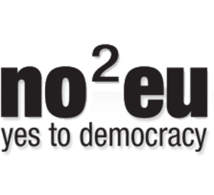
Born out of refinery worker rage at being sidetracked for foreign labour from across the continent, No2EU – Yes to Democracy is the brainchild of Rail, Maritime and Transport (RMT) Union general secretary, Bob Crow. The aim of this Europe-specific party, which won’t exist after the European elections, is to prevent what it sees as the undemocratic capitalist export of British jobs abroad (a nod to the refinery incident) and to disestablish what it sees as the bureaucratic gravy train of Brussels from streaming through anti-trade union laws from an unelected commission and European Court (ECJ). Other policies include opposition to further EU common foreign and defence merger policies, and to keep Britain out of the Eurozone. No2EU is the first party other than Labour to receive the full backing of a trade union, in this case, the ‘Awkward squad’s RMT union. Also included in this traditionalist left-wing coalition are the Socialist Party, the Communist Party, the Indian Workers’ Association and the Alliance for Green Socialism. In a bold performance of their No2EU motto and principle, if elected, the MEPs won’t take up MEP wages or expenses and won’t actually sit in the Parliament but instead picket across Europe with other trade unions arguing for what they see as a working people’s Europe of independent states rather than the international structure we have at present.
CANDIDATES
Keith Allan Gibson
Lindsey Oil Refinery worker – no other information available at the time of writing.
Celia Elizabeth Foote
Alliance for Green Socialism – no other information available at the time of writing.
Cllr Jackie Grunsell
Save Huddersfield NHS Councillor – The outspoken Kirklees councillor is standing for the coalition to defend the UK from what she sees as the capitalist biased EU directives which encourage privatisation of public services and attacking trade union rights. She stated “Although our Government is wedded to the ideology of neo-liberalism, with the cuts and privatisation this brings, the EU often provides the legal and political backing for them to carry on. “It is important to oppose this on every level – locally, nationally and internationally.
Peter Rowland March
RMT Regional secretary – no other information available at the time of writing.
Michael Francis Davies
Alliance for Green Socialism secretary – no other information available at the time of writing.
Juliet Marie Boddington
Alliance for Green Socialism activist – no other information available at the time of writing.
Socialist Labour Party
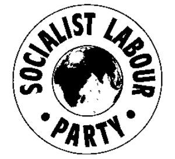
The Socialist Labour Party was launched in 1996 after they splintered from the Blair’s New Labour. They consist of trade unionists and campaign activists.
They are committed to complete withdrawal from the European Union. They believe that the EU is a capitalist club that allows multi-national corporations to exploit workers and that the public is at the mercy of a vast, faceless bureaucracy.
They believe the Social Chapter has removed the rights and benefits of people.
They think that European legislation such as taxation policies do not represent the economic interests of the British people.
They oppose joining the Euro and aim to regain independence from what they feel is a capitalist European super state. They are committed to the campaign for true internationalism to ensure that we have strong trading links with the rest of the world.
They want Britain to expand links with the rest of the world including countries such as Cuba that have suffered over 45 years of economic blockade from the US.
CANDIDATES
William Kenneth Capstick
Linda Venice Sheridan
Stephen Edward Yoxall
Green Party
The Green party is basing its European election campaign on the proposal of a fiscal stimulus plan entitled the “Green New Deal”. Greens will push for “massive” investment in order to tackle the environmental, economic and social problems that the world is facing. They propose the injection of around £45 billion to the UK economy to fund Green initiatives such as the building of wind turbines and the provision of free house insulation.
The party welcomed the €200 EU recovery proposal of 2008 but criticised it for lacking environmental focus. If more Green MEPs are elected then we can expect increased support for similar proposals with the investment being more directly channelled into environmental projects. The party will call for cooperation between the EU and the Bank of England to keep interest rates low while investment projects are taking place.
The party is strongly opposed to the building of Nuclear power plants because of concerns about their safety and cost. They have long been committed to a ban on GM foods in the UK and think that the best way to bring about a UK ban is to propose a ban through the EU.
Green MEPs accuse other parties of failing to realise the fundamental links between the environment and the economy by only offering medium term solutions to the global financial crisis.
They claim, along with writers of the Stern report, that large-scale investment in the short term will be far less costly than gradual action in the long term.
Jury Team
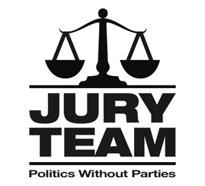
Described by The Times as an ‘X Factor party’, the Jury team selects its candidates via a public vote. The party has no manifesto, and no specific policies. Instead, it aims to bring together a collection of independent MPs who are then encouraged to vote as they think the people would like them to, not as the party whips instruct them. Anyone can put themselves forward to be a candidate for the party, and candidates are then selected by public vote. The party is fielding three candidates for Yorkshire and Humber.
CANDIDATES
Barbara Hibbert
First is secondary school teacher Barbara Hibbert, who focuses on social justice and education, saying that in order for social mobility to be achieved, ‘it is essential to make education affordable and accessible for all’.
Anthony Hooper
Former Principal Lecturer of Politics at Huddersfield University Anthony Hooper is the party’s second candidate. Born in the region, Hooper directs his attention towards foreign policy where he is pro EU, recognising a country’s ‘duty’ to those around it.
Ben Saxton
The final candidate that the Jury Team will field is Ben Saxton, a customer care manager from Sheffield who describes himself as ‘a normal citizen who wants the Yorkshire people to have an input into Europe’.
Liberal Democrats
Pro European party the Liberal Democrats aims to get current MEP Diana Wallis elected for a second term. The party is campaigning on policies to modernise aspects of the EU. It was Wallis, for example, who was one of the key campaigners within the EU for forcing phone operators to charge the same rate on the continent as we pay here for calls and texts. This is a measure that is coming into effect on June the 1st. The party’s other key policies are to support the adoption of the Euro, to use EU money to support local business, and to create a cross border anti-crime network to prevent what they describe as the ‘globalisation’ of crime. With serious green commitments, the Liberal Democrats promise that by 2020, 20% of Europe’s energy will come from renewable sources, with a target of 15% for the UK itself.
Labour
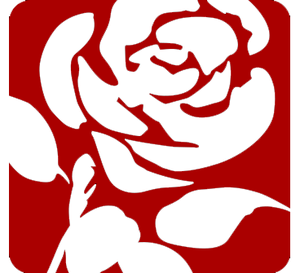
Labour, the governing party in the UK for the last ten years, currently has 19 MEPs nationwide, with two from Yorkshire and the Humber region.
Founded in 1900 to represent the views of labour, the Labour Party overtook the Liberals to become the main opposition party to the Conservatives in the 1920s. They were first elected to a majority government in the UK in 1945. In 1994 the party sought to move away from their more traditionally socialist roots by becoming New Labour and seeking to pursue a ‘Third Way’ within politics under Tony Blair. Their current leader is Gordon Brown.
Within the makeup of the European Parliament, Labour form part of the larger group Socialist Group in the European Parliament (PSE), a bloc of 217 MEPs from left-wing parties from every European state except Latvia and Cyprus. The group is currently led in the European Parliament by German MEP Martin Shultz, but was led by Labour MEP Pauline Green in 1994.
The PSE, the second biggest such group within the EU, stand for six broad policies within Europe: creating a new Treaty for a new Europe, protecting the environment, promoting equality, defending human rights, putting people first and creating jobs and prosperity.
The party is expected to do badly at the upcoming European elections both as a protest against Brown’s leadership and the current scandal over MP’s expenses. Many fear this will not translate into votes for the other two main parties, but will sweep smaller parties into the European Parliament, notably the British National Party.
CANDIDATES
Linda McAvin [incumbent]
An MEP since 1998 and one of many current Vice-Presidents of PSE, McAvin is the first on the list of Labour candidates in the region. Her areas of interest include climate change and anti-discrimination. She also sits on the Temporary Committee for Climate Change.
Richard Corbett [incumbent]
As well as being Deputy Leader of Labour MEPs, Corbett also acts as a spokesman for the PSE. His previous work includes negotiations over the European Constitution, and he chairs the British Beer Club in the EU.
Emma Hoddinott
Although not an MEP, Hoddinott was one of the youngest councillors when elected in 2003 to Beverly Town Council. She also stood, unsuccessfully, in the 2005 General Election. She is a graduate of Leeds University.
David Bowe
An MEP for Yorkshire and the Humber until 2004, Bowe previously served on the Environment Committee, and on the Committee for Industry, Research and Energy. While an MEP he acted as Labour’s spokesman on the environment. Before that he was a science teacher.
Melanie Onn
Wife of a serving soldier, and mother of one, Onn is a former trade union shop steward.
Mahroof Hussein
A current Councillor and former Parliamentary researcher, he was awarded an MBE for services to local government in 2008. Hussien is the only ethnically diverse candidate on the list of Labour candidates, and serves as a member of the Tackling Extremism Task Force. He also stood against Nick Clegg in the last General Election.
British National Party
The British National Party is fielding 6 candidates for Yorkshire and Humber, headed up by anti-European Unionist Andrew Brons. A party built around anti-immigration ideology, the British National Party is campaigning on a range of anti-EU policies. If elected, they promise to campaign for Britain to withdraw from the union, ‘expose EU corruption’, and to ensure Britain remains on the pound. The party remains fiercely anti-immigration, with their website stating that “we call for an immediate halt to all further immigration”. They also seek to opt out of the migration laws that allow British citizens to work in Europe without a permit, hoping to reduce immigration into the country. Believing Eastern European migrants especially to be a drain on the economy, the BNP are opposed to the expansion of the union to include Turkey. Appreciating the difficulty of withdrawing the country from the EU completely, the BNP promise instead to withdraw from expensive EU commitments, such as the common agricultural and fisheries policies. They also want to stop payments of the £9bn that the UK pays to remain a member state every year.
UK Independence Party
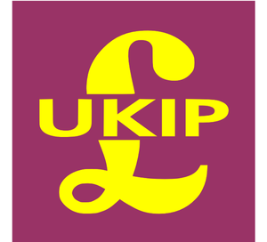
Currently boasting 9 MEPs, the United Kingdom Independence Party is based around the aim of withdrawal from the European Union altogether. From its foundation as the Anti-Federalist League in 1993, the party has always preyed on the Euro-sceptic fringes of the Conservative party. The collapse of the rival Referendum Party in 1997 led to a bolstering of UKIP membership, and the party gained three seats in the 1999 European Elections.
Amid controversies over leadership and funding, including speculation about the possible interest of Robert Kilroy-Silk in heading the party in 2004, UKIP have maintained a strong momentum heading into the current elections. A May 2009 YouGov poll placed the party on 15% of the vote, and it was reported in March that Labour MPs feared being pushed into 4th place by UKIP MEPs.
Aside from being anti-EU, the party are also strongly against ID cards, and support the replacement of income tax and national insurance by a flat tax of 33%. They also support a five year moratorium on immigration in the UK, a policy that has led them to be linked, incorrectly, to the BNP.
Within the EU, they form part of the group Independence and Democracy, a 37-strong group representing Euro-sceptics from the UK, Poland, Denmark, France, The Netherlands, Sweden, Italy and the Czech Republic. The group is co-chaired by UKIP MEP Nigel Farage and Danish priest and MEP Hanne Dahl.
CANDIDATES
Godfrey Bloom [incumbent]
As the only Yorkshire and Humberside UKIP MEP, Bloom was elected in 2004 after serving as a member of the Yorkshire Territorial Army for over 20 years. He is a popular speaker on financial economies at European universities and business seminars, but has sparked controversy with comments made about women’s rights in the workplace and roles in the home. He is the lead candidate for UKIP in the region.
Jonathan Arnold
A former Head of Mathematics at a Christian secondary school, Arnold has been a member of UKIP since 2001, and stood in the 2005 general election. He has represented England internationally playing chess, and is the former chair of a charity that provides activities for young people in Sheffield. He has also been selected to stand in the next general election for Sheffield South-East.
Jason Smith
The chairman of the Bradford & District Branch of UKIP, Smith was the main co-ordinator of the No2ID campaign in his area, and also serves as the Secretary of the Yorkshire and Humberside UKIP. A qualified alternative health practitioner, he aims to raise the profile of Yorkshire and the Humber region nationally in the media.
Conservatives
The Conservative party, in their infinite wisdom has decided that the best way of portraying their message to the public is to publish a 28 page manifesto. Below are their most important policies.
Economics – They intend to enhance the European single market by reducing protectionism and harmonizing taxes across the EU. They want to decrease legislation and introduce measures to help small businesses. They intend to enhance co-operation in the EU while retaining national authority and bring control of social and employment laws back to the British government. They want to realize the achievement of a transatlantic market by 2015.
Climate Change – They want to move towards a low carbon economy, strike a global deal for cutting carbon emissions and create legislation that allows pollution control to be implemented evenly across the EU. They intend to overhaul the Common Fisheries Policy and reform the CAP.
Trade – The Tories want to continue to support developing countries through the Millenniums Development Goals, reform EU aid and ensure that the EU promotes good governance and democracy throughout the world. They intend to maintain UK independence on foreign affairs and restart the commitment to NATO.
Transparency – They will resist the extension of EU power over the criminal justice system, hold a referendum on the renamed EU Constitution, and address trust issues between the public and their elected representatives. They will work for a cap on the EU budget and hope to scrap meetings in Strasbourg to reduce costs. They will also encourage other parties to sign up to their ‘right to know’ regime on expenses.
CANDIDATES
Edward McMillan-Scott
Edward McMillan-Scott was the Conservative spokesman on Foreign Affairs and Security for many years in the European Parliament. He also served as Economics and Transport spokesman.
Timothy Kirkhope
Timothy Kirkhope became an MEP in 1999 and was the Leader of the Tory MEPs from 2004-2007. He was re-elected leader in 2008.
Fleur Josephine Butler
Fleur Josephine Butler is a councillor in Richmondshire with responsibility for Economic Development and for Social Housing.
Christian Party – CPA
The Christian People’s Alliance (CPA) and the Christian Party “Proclaiming Christ’s Lordship” are the two largest specifically Christian parties in the UK. They have joined forces on numerous occasions for the purposes of elections, running as a non-denominational Christian party, often called “Christian Choice”.
In a joint statement of purpose they said “The primary purpose of the Christian Party is to proclaim the Lordship of Christ. The party also exists to empower those who confess “Jesus Christ as Lord!” to serve him in the political sphere.”
Alan Craig, the leader of the Christian People’s Alliance, previously ran for Mayor of London, coming sixth ahead of UKIP. The party campaign for an end to secularism, a return to Christian values, ending social divide, transparency and accountability within the EU, an immediate referendum on the Lisbon Treaty, and seeking to help the environment by moving away from a carbon based economy.
The party do not currently have any MEPs, although the CPA has a number of Councillors in London Boroughs, and Alan Craig was brought into the public eye after receiving death threats by an Islamic group for opposing plans to build a 12,000 strong Mosque in the centre of London.
CANDIDATES
Sid Cordle
Sid Cordle was awarded an MBE for services to politics. A former Treasurer of the Christian Peoples Alliance, he stood as a CPA Parliamentary candidate in Sheffield Hallam in the 2005 election.
No info on other candidates.
European Parliamentary Elections
|
British National Party
|
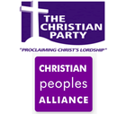Christian Party – CPA
|
Conservatives
|
English Democrats
|
Green Party
|
Jury Team
|
|
Labour
|
Liberal Democrats
|
Libertas
|
No2EU
|
Socialist Labour Party
|
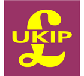UK Independence Party
|
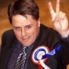BNP win two European seats
The BNP have gained two seats in the European elections, including one in Yorkshire
Lib Dem Martin Shapland: Europe as a global player
Liberal Democrat Martin Shapland discusses Britain’s role within the EU
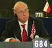UKIP MEP Godfrey Bloom: The Future of the EU
Godfrey Bloom talks about the future of the EU
Vote on Europe: The parties Debate
Conservatives/Labour/Liberal Democrats…who should get your vote? Students make a case for each party and why they deserve your support in the European Parliamentary Elections.
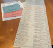Has democracy gone a step too far?
Voter apathy may allow dangerous and obscure minority parties to secure more power than ever before in the upcoming 2009 European Election.
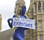Number worries for Labour
The current bout of summer weather that we are experiencing will not go far to raise the hopes of Labour as Thursday approaches
European Elections 101
Considering most A-level politics teachers ignore the EU because it is seen as too complicated to teach, it is not a surprise that most people haven’t the faintest idea what the EU is actually about